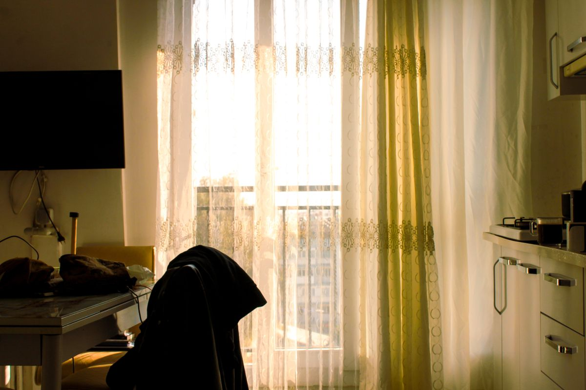
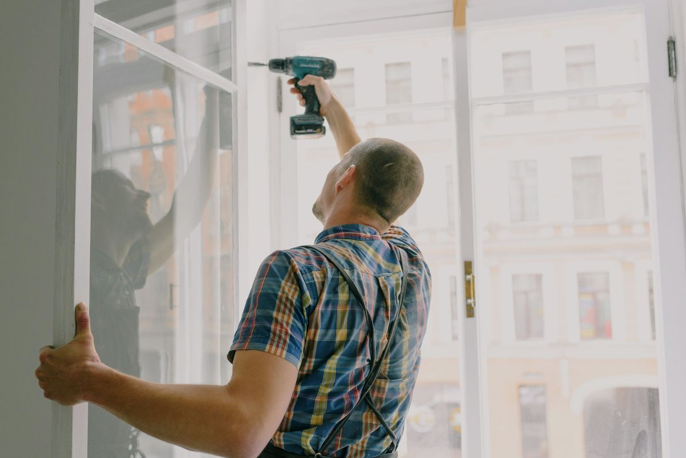

A considered service, start to finish
Measured with care. Fitted to last.
Our home-to-home service takes the guesswork out of made-to-measure curtains.
Seven steps
How your order comes together

Before the visit
Before we arrive
- Think about privacy, light control and how you use the room.
- Clear access to windows and note any furniture or radiators nearby.
- Bring inspiration photos if you have them; we will bring the swatches.
On the day
Fitting, made easy
We fit ceiling tracks, wall tracks and decorative rods. Most installations take 1–3 hours, depending on the number of windows and access. Stitching typically takes 2–3 weeks after fabric approval.
Our current service area includes the city and surrounding neighborhoods within approximately 25 miles. Ask us about your location when booking.

Do it once, do it right
Measurement guide
For a rough estimate, measure the track or pole width (not just the glass) and the desired drop from the track to the sill or floor. Include whether you prefer a floor kiss or a small clearance. We will verify every measurement professionally before making.
Track & rod options
Choose discreet ceiling tracks, smooth-draw wave systems, classic metal rods or warm wood poles. We will recommend the right support for your window, fabric weight and finish.
Made to Measure. Made for You.
Book your measurement visit.
We will measure every window, talk through light and privacy, and leave you with a clear, itemised quote.